왜 첫 회사 2년이 중요해졌을까요
발표자도 부트캠프를 마치고 2년 동안 취업을 준비했어요. 그때 마음은 "중소기업이든 어디든 제발 저 좀 뽑아 주세요" 하나였고, 회사를 고른다는 생각 자체를 못 했다고 해요. 연봉도 인테리어도 사람도 괜찮은 첫 회사에 들어간 건 알고 고른 게 아니라 운이었어요. 그래서 이 영상은 운에 맡기지 말고 하나씩 확인하자는 이야기예요.
왜 지금 이게 더 중요한지는 숫자로 보여 줘요. 아래 슬라이드의 주황 막대가 경력 3년 미만, 회색 막대가 3년 이상 개발자예요. 2024년 한 해 동안 앞쪽은 9,000명 가까이 줄고, 뒤쪽은 4만 2,000명쯤 늘었어요. 슬라이드 아래 출처에는 한국노동연구원 분석이라고 적혀 있어요.
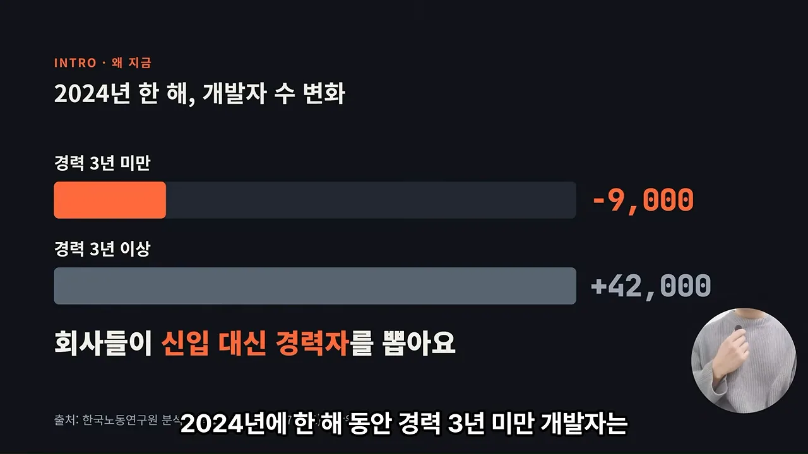
첫 회사에서 1~2년을 보내고 이직 면접에 가면 더 이상 신입으로 봐 주지 않아요. 슬라이드의 마지막 주황 칸처럼 "그 2년 동안 뭘 했어요?"라는 질문이 기다리고, '최소한 이 정도는 해 봤다'를 보여 줘야 해요. 첫 회사를 잘못 고르면 이 질문 앞에서 진땀을 빼게 돼요.
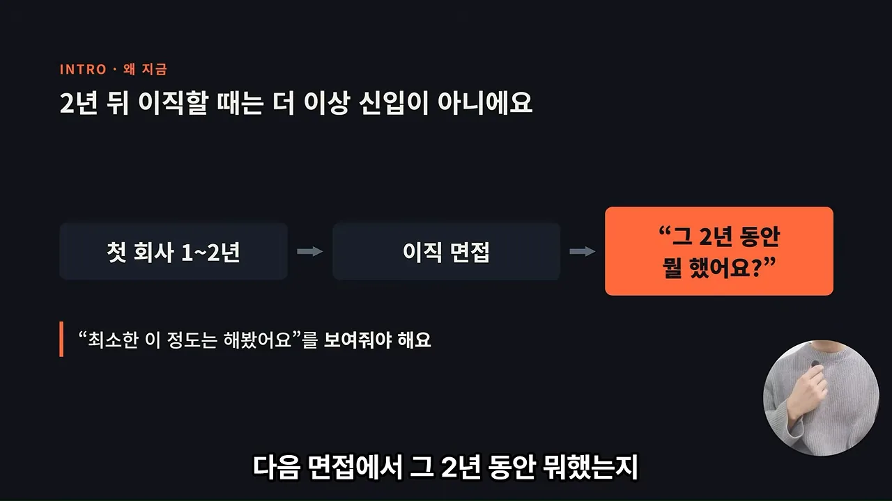
그래서 발표자가 회사를 보는 기준은 딱 하나예요. 주황색 화면에 크게 띄운 이 문장이에요. 영상은 이 문장을 처음, 중간, 끝에 세 번 다시 띄워요.
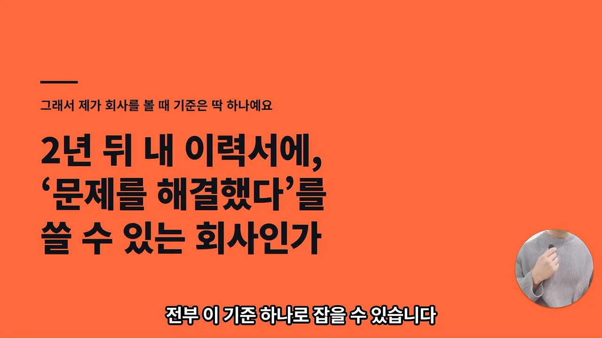
영상은 이 기준으로 회사를 네 번 걸러요. 공고를 볼 때, 서류 합격 뒤 면접 가기 전, 면접 자리에서, 합격 후 계약서를 받을 때예요. 단계마다 무엇을 보는지 한 장으로 모으면 아래와 같아요. 뒤의 섹션이 이 순서를 그대로 따라가요.
공고에서 거르는 회사 세 종류
면접을 보기 전에 공고만 다시 꼼꼼히 봐도 걸러지는 회사가 꽤 있어요. 영상은 세 종류를 짚어요.
1. 임금체불 명단에 오른 회사
가장 먼저 볼 건 임금체불이에요. 슬라이드 오른쪽 주황 꼬리표처럼 2026년 1월 19일부터 고용노동부의 체불사업주 명단을 채용 사이트에서도 조회할 수 있게 됐어요. 잡코리아·알바몬·인크루트는 명단을 공지하고, 알바몬은 명단에 오른 회사가 공고를 못 올리게 막아요. 고용노동부 누리집의 '체불사업주 명단공개' 메뉴에서 직접 검색해 볼 수도 있어요.
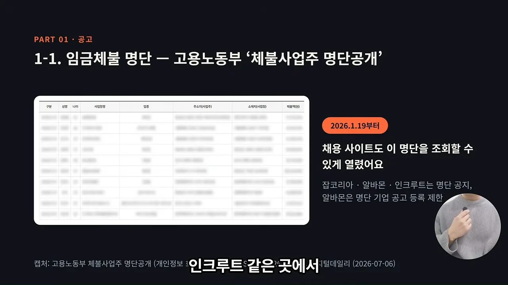
그런데 명단에 오르는 기준이 꽤 높아요. 아래 슬라이드의 회색 꼬리표 두 개가 그 조건이에요. 3년 안에 체불로 두 번 이상 유죄를 받고, 1년 체불액이 3,000만 원 이상이어야 해요. 2026년 4월에 공개된 상습 체불사업주는 187명이었어요. 그래서 명단에 있으면 쳐다볼 필요도 없지만, 없다고 안전한 회사라는 뜻은 아니에요.
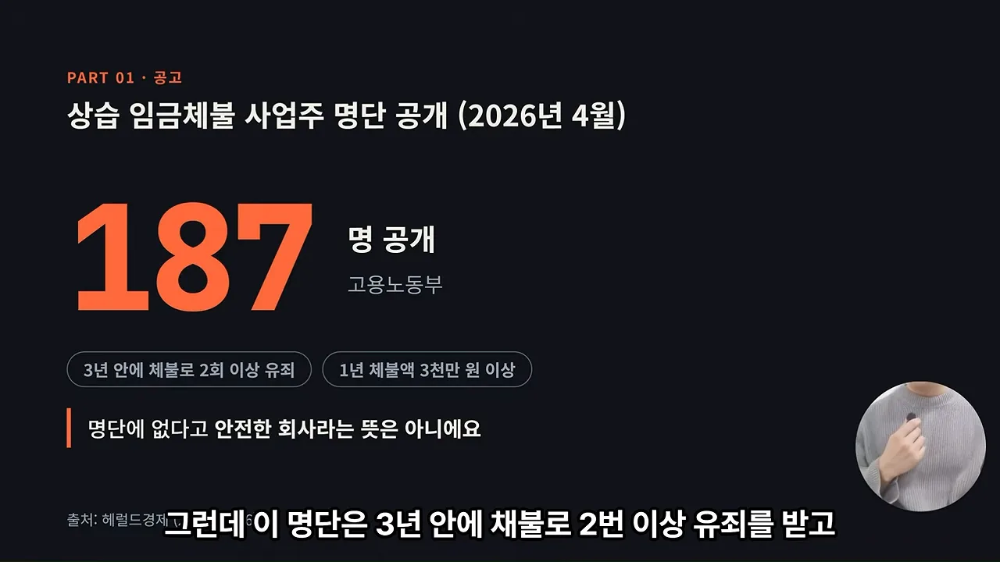
2. 신입을 '3년 차'로 팔아넘기는 회사
발표자가 "좀 충격적인 얘기"라며 꺼낸 경우예요. 신입으로 뽑아 놓고 고객사에는 3년 차라고 속여 보내는 회사가 있어요. 개발자 커뮤니티 'OKKY'에 올라온 글이 예시예요. 아래 슬라이드는 글쓴이에게 일어난 일을 다섯 칸으로 이었어요. 신입으로 입사했는데 회사가 경력을 3년으로 부풀렸고, 일주일 만에 파견을 갔어요. SI(System Integration)는 파견 전에 고객사 면접을 한 번 더 보는 경우가 많은데, 글쓴이는 거기서 안 써 본 프로그램을 "써 봤어요"라고 말해 버렸어요. 마지막 주황 칸처럼 하필 파견처가 그 프로그램을 주로 쓰는 곳이었어요.
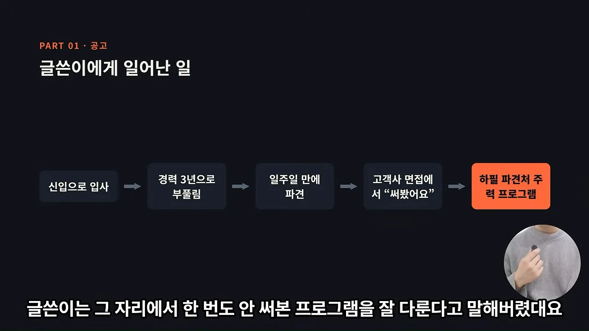
한 사람만의 이야기가 아니에요. 다른 커뮤니티에는 고객사 쪽 사람이 쓴 글도 있었어요. 4년 차라고 받은 개발자가 알고 보니 이 일을 처음 하는 신입이었고, 그 업체는 초급만 뽑아 4~5년 차라고 교육해서 내보내고 있었대요. 아래 슬라이드는 2008년 디지털타임스 기사예요. 입사 3개월 차 신입을 경력 3년 6개월로 속여 프로젝트에 넣었다는 내용으로, 꽤 오래된 관행이라는 걸 보여 줘요.
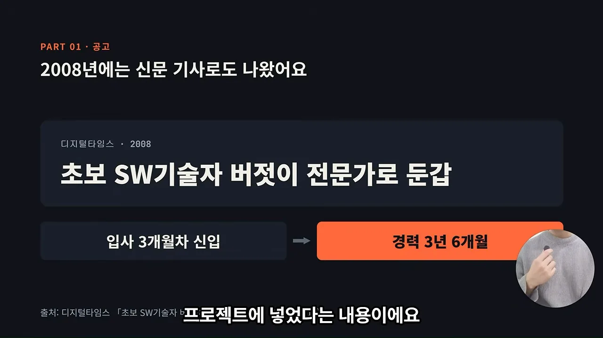
이렇게 들어간 신입은 어떻게 될까요. 고객사는 3년 차니까 기초는 당연히 안다고 여겨서 아무도 가르쳐 주지 않아요. 물어보는 순간 신입인 게 드러나니 회의에서는 아는 척 고개만 끄덕이고, 퇴근하고 몰래 검색해요. 그렇게 2년을 버텨도 문제예요. 아래 슬라이드처럼 이력서에는 '경력 2년'이 찍혀 있는데, 다음 면접에서 "그 프로젝트에서 뭘 개선했어요?"라고 물으면 말풍선이 '……'로 남아요. 배운 게 아니라 들키지 않으려 버틴 시간이었으니까요.
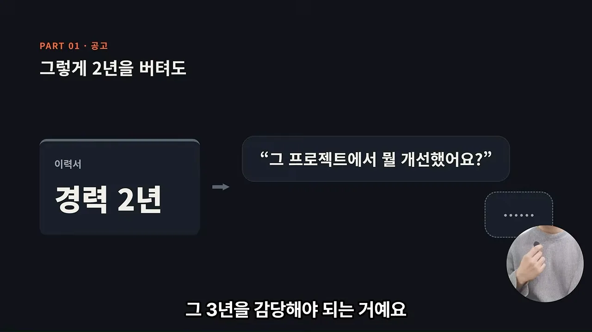
이런 말은 면접에서 대놓고 나오기도 해요. 발표자는 멘토링하면서 "고객사에는 ○년 차로 들어갈 거예요"라는 말을 들었다는 사람을 여럿 만났고, 그런 회사는 가지 말라고 했어요. 연차에 안 맞는 일을 혼자 공부하며 해내야 하고, 못하면 압박에 계속 시달리니까요. 발표자 자신도 정신과를 몇 번 다녀 봐서 멘탈이 무너지면 일상까지 흔들리고, 한 번 극복해도 다시 찾아오기 쉽다는 걸 안다고 말해요.
3. 근무지가 어디인지 안 나오는 공고
세 번째는 '고객사 근무', '프로젝트 투입', '파견 가서 프로그램 개발'처럼만 적힌 공고예요. 아래 슬라이드처럼 발표자가 분석한 신입 백엔드 공고 168개 중 58곳이 파견·상주 근무를 언급했어요. 34.5%, 세 곳 중 한 곳꼴이에요.
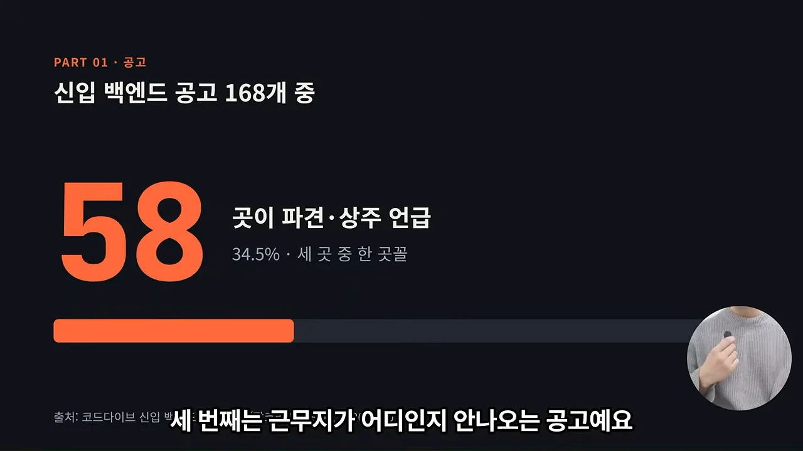
그렇다고 SI가 다 나쁜 건 아니에요. 아래 슬라이드 왼쪽 '배우는 SI'는 금융·공공 쪽 큰 프로젝트에 들어가 복잡한 실무 코드와 선배 코드를 보며 빨리 배우는 곳이에요. 오른쪽 '피할 SI'는 사람만 고객사에 보내 놓고 인원만큼 돈을 받는 회사예요. 같은 회사 선배가 옆에 없으니 막혀도 물어볼 데가 없고, 그만큼 성장도 못 해요.
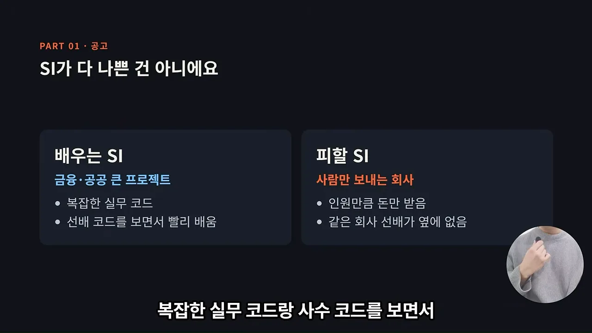
둘을 구분하는 방법은 어렵지 않아요. 면접에서 슬라이드의 질문처럼 "입사하면 처음 3개월 동안 어디서, 누구랑, 무슨 일을 하나요?"라는 뉘앙스로 물어보면 돼요. 답을 머뭇거리거나 대충 얼버무리면 의심해 볼 만해요.
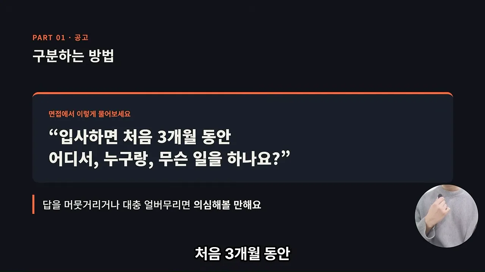
경력을 속이거나 사람만 보내는 회사에서는 몇 년을 다녀도 이력서에 '문제를 해결했다'를 쓰기 어려워요. 그래서 공고 단계에서 거르는 거예요.
면접 전 10분, 숫자로 볼 세 가지
공고는 멀쩡한데 안이 굉장히 어수선한 회사도 있어요. 퇴사자가 계속 나오는 회사예요. 이건 공고로는 안 보이니 숫자로 확인해야 해요. 발표자는 지원은 일단 넓게 하라고 권해요. 대신 서류에 붙고 면접을 보러 가기 전에 딱 10분만 써서 아래 세 가지를 보라고 해요. 슬라이드 오른쪽 끝에 각각 어디서 보는지도 적혀 있어요.
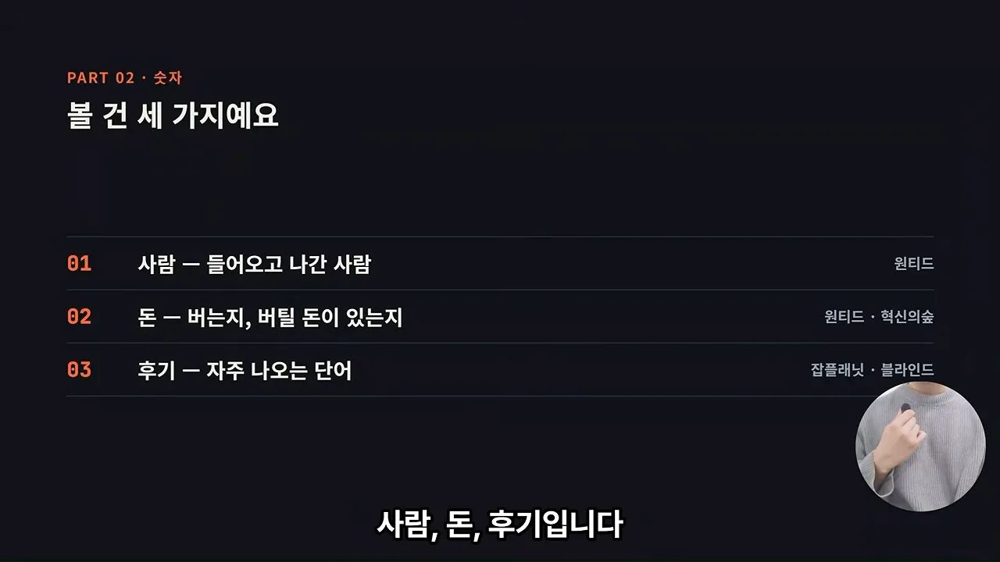
사람 — 들어온 사람보다 나간 사람이 많은가
원티드의 회사 페이지에 로그인하면 국민연금·고용보험 가입자 기준으로 들어온 사람과 나간 사람 수가 그래프로 나와요. 아래 화면의 막대가 달마다의 입사·퇴사 인원이에요. 최근 1년 동안 나간 사람이 계속 더 많다면, 문제를 느끼고 떠난 사람이 많은 회사예요. 같은 자리를 1년 내내 뽑고 있는 회사도 마찬가지예요.
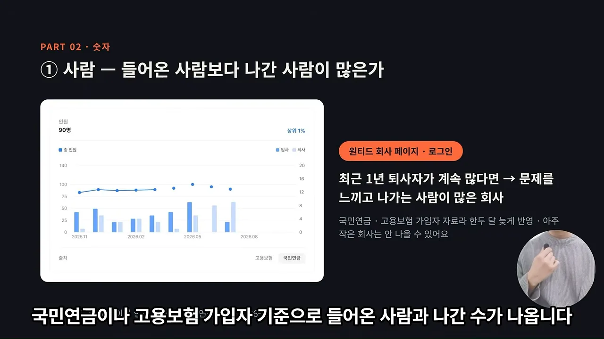
돈 — 회사가 돈을 벌고 있는가
발표자는 원래 DART(Data Analysis, Retrieval and Transfer System)에서 감사보고서를 보라고 하려다가, 직접 열어 보니 뭘 봐야 할지 모르겠더라고 솔직하게 말해요. 대신 원티드 회사 페이지를 보면 매출·영업이익·당기순이익이 한 번에 나와요. 아래 화면은 발표자가 찾아본 회사 중 하나예요. 파란 선(매출)은 2024년 477억 원까지 가파르게 오르는데, 그 아래 막대인 영업이익(-34.7억)과 당기순이익(-39.2억)은 해마다 0 아래에 있어요. 이 회사는 퇴사자도 많았다고 해요.
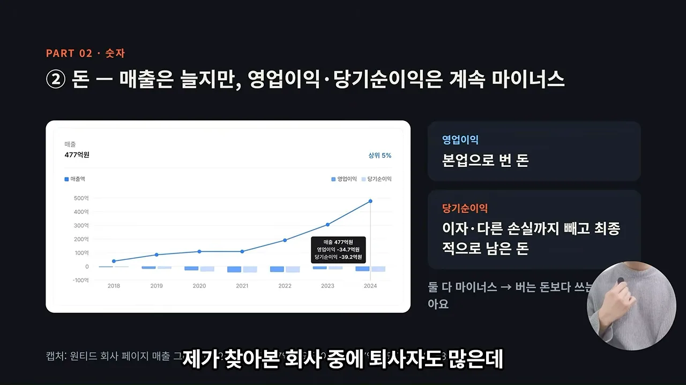
그렇다고 적자면 무조건 피하라는 건 아니에요. 스타트업은 혁신의숲에서 재무를 함께 보면 돼요. 아래 화면 오른쪽 그래프의 노란 막대가 자본(자산 − 부채)이에요. 영업이익은 3년 내내 마이너스지만, 투자받은 돈이 남아 있으면 적자여도 당장 흔들리지는 않을 수 있어요. 다만 오른쪽 표의 자본이 2024년 364.3억에서 2025년 121.2억으로, 1년 새 3분의 1로 줄었어요. 그래서 남은 돈이 얼마인지와 함께 얼마나 빨리 줄고 있는지를 봐야 해요.
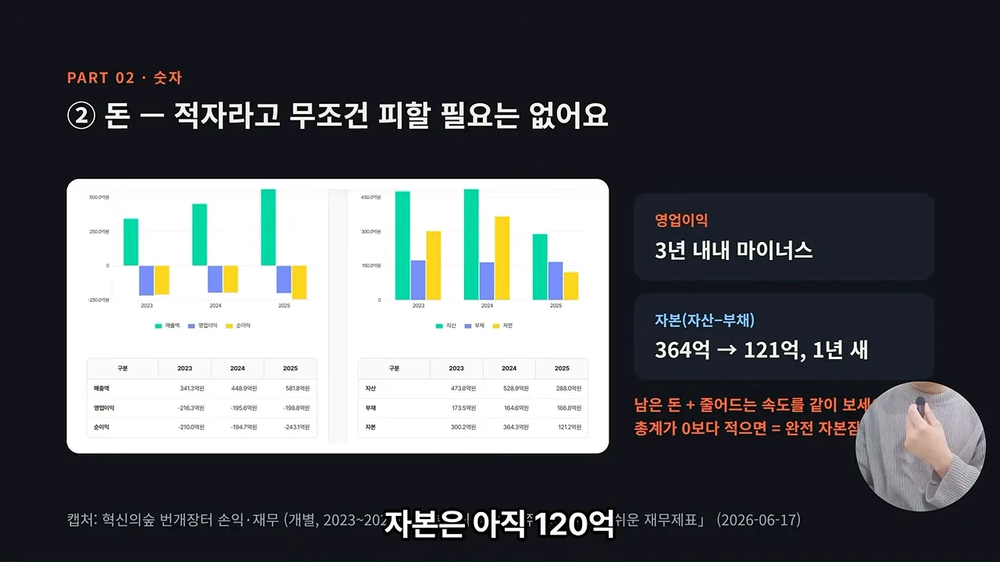
자본총계가 마이너스라면, 즉 쌓아 둔 돈을 다 까먹고도 모자란 자본잠식 상태라면 정말 조심해야 해요. 발표자 주변에도 입사한 뒤 회사가 어려워져 망하거나 인원을 줄이는 일을 겪은 사람이 종종 있었어요. 어렵게 들어갔다가 나오는 것도 힘들지만, 나오기 전까지 마음고생이 정말 심하다고 해요.
후기 — 별점 말고 자주 나오는 단어
잡플래닛이나 블라인드에서는 별점보다 자주 반복되는 단어를 보세요. 아래 화면의 주황 꼬리표 세 개, '급여 지연', '사수 없음', '야근 수당 없음' 같은 말이요. 최근 1년 후기에 계속 나온다면 한 사람의 불만이 아니라 그 회사가 원래 그런 거예요.
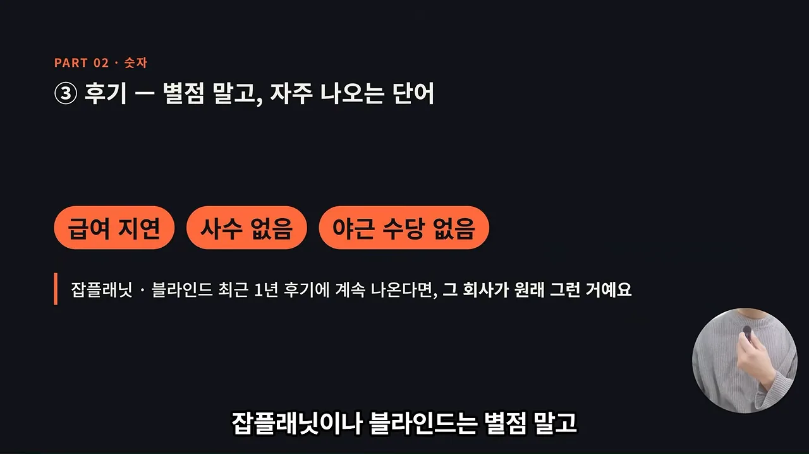
왜 이 세 가지를 보나
마지막 슬라이드가 이유를 두 줄로 묶어요. 위 줄은 사람이에요. 사람이 계속 나가면 가르쳐 줄 선배도 함께 나가요. 아래 줄은 돈이에요. 회사가 1년 만에 망하면 이력서에는 애매한 1년짜리 경력만 남아요. 둘 다 결국 '2년 뒤 이력서에 쓸 한 줄'을 지워 버려요.
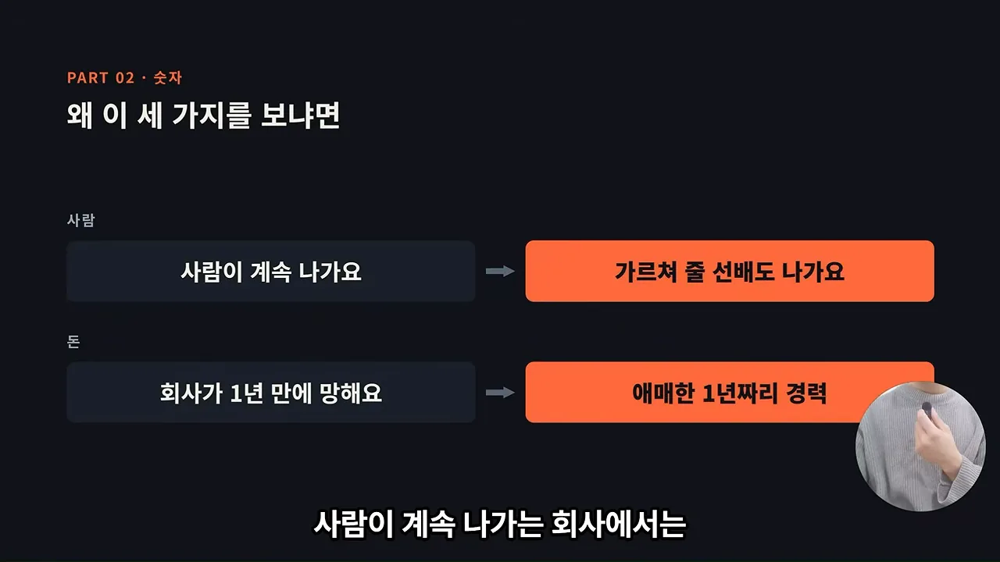
면접 보러 가기 전 10분 동안 볼 것을 표 하나로 모으면 이래요.
| 볼 것 | 어디서 | 이러면 조심해요 |
|---|---|---|
| 사람 | 원티드 회사 페이지 (로그인) | 최근 1년간 나간 사람이 들어온 사람보다 계속 많아요. 같은 자리를 1년 내내 뽑아요 |
| 돈 | 원티드 회사 페이지, 스타트업은 혁신의숲 | 매출은 늘어도 영업이익·당기순이익이 계속 마이너스예요. 자본이 빠르게 줄거나 자본총계가 마이너스예요 |
| 후기 | 잡플래닛, 블라인드 | 최근 1년 후기에 '급여 지연', '사수 없음', '야근 수당 없음'이 반복돼요 |
면접에서 보이는 신호
많은 지원자가 면접은 회사가 나를 보는 자리라고만 생각해요. 발표자는 반대로 나도 회사를 보는 자리라고 말해요. 아래 슬라이드처럼 신입 백엔드 공고 168개 중 코딩 테스트나 과제가 있는 곳은 21곳, 12.5%뿐이었어요. 중소기업 대부분은 면접 한두 번으로 사람을 뽑아요. 그러니 지원자도 그 한두 번 안에 회사를 파악해야 해요.
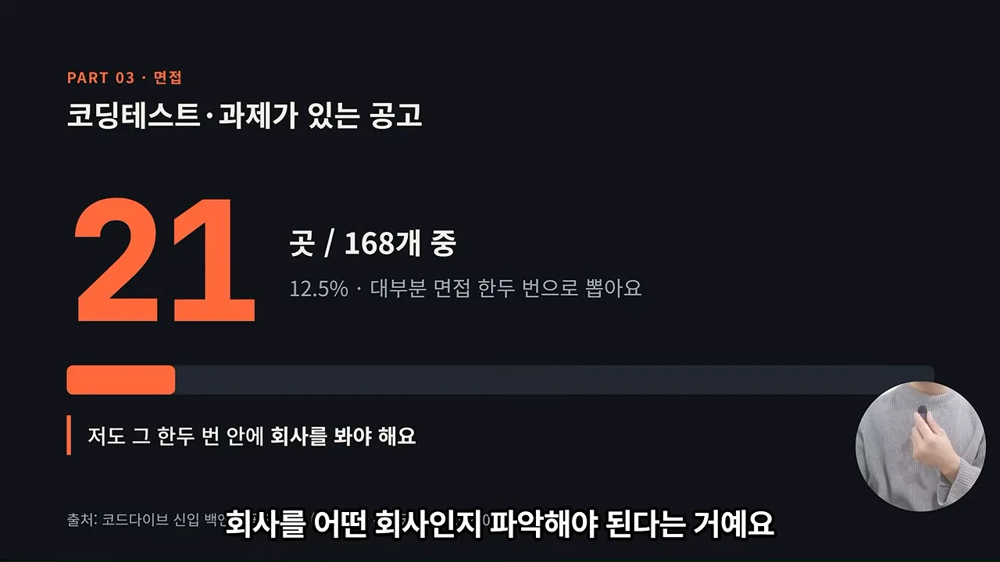
1. 기술 질문이 없는 면접
프로젝트 이야기는 하나도 없이 "술 마셔요?", "담배 피워요?", "부모님 뭐 하세요?"만 묻는 면접이 커뮤니티에 나와요. 발표자도 비슷한 일을 겪었어요. 아래 슬라이드의 세 칸 그대로예요. 아이스브레이킹만 계속하고, 기술 질문은 0개였고, 끝나고 나서는 결과 연락조차 없었어요. 경험을 이것저것 말하려 했지만 면접관이 묻지도 않고 자기 이야기만 해서 가만히 듣기만 했대요.
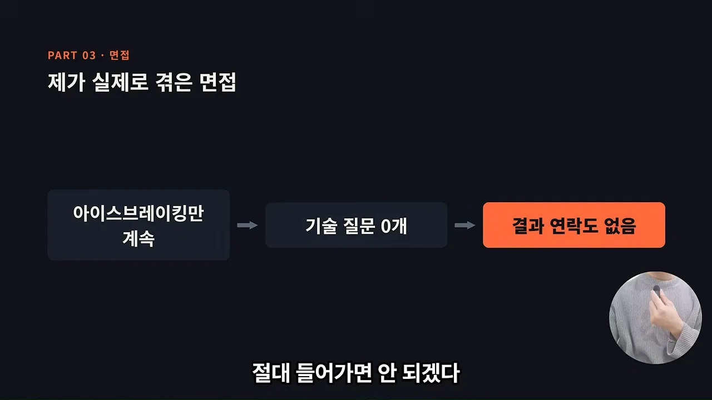
발표자는 일반화일 수 있다고 인정하면서도, 하나를 보면 열이 보인다고 생각한다고 말해요.
2. 너무 조급해 보이는 회사
연봉 이야기는 쏙 빼고 아래 말풍선처럼 "연봉은 일단 들어오시면 알려 드릴게요"라며 입사부터 재촉하는 회사예요.
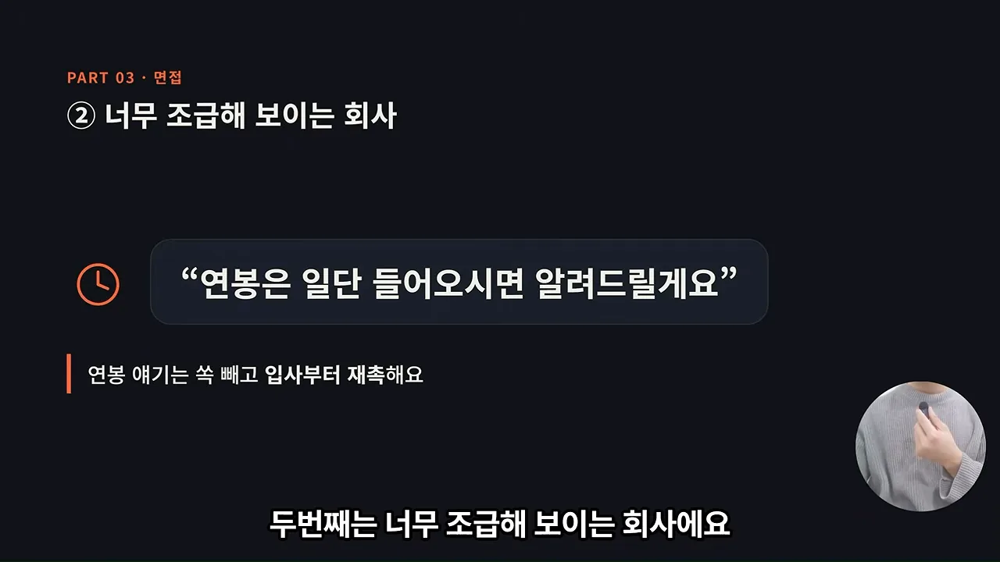
잡코리아 취업 Q&A에 이 질문이 올라온 적이 있어요. 아래 슬라이드가 현직자 답변 세 줄이에요. 편의점 알바도 일하기 전에 조건을 알고 도장을 찍는다는 답, 지원자가 어수룩해 보이면 마음껏 깎겠다는 뜻이라는 답, 공고와 다르게 연봉을 400~600만 원씩 깎는 곳도 봤다는 답이에요.
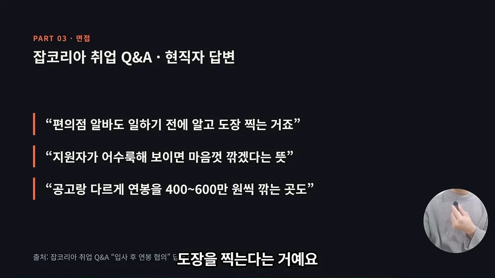
3. 대표가 개발을 어떻게 보는가
작은 회사는 대표가 기획까지 직접 하는 경우가 많아요. 대표가 개발을 잘 모르면 아래 두 말풍선 같은 말이 나와요. "버튼 하나 추가하는 건데 왜 일주일이나 걸려요?", "잘 돌아가는데 구조를 왜 고쳐요. 일단 기능부터 해요."
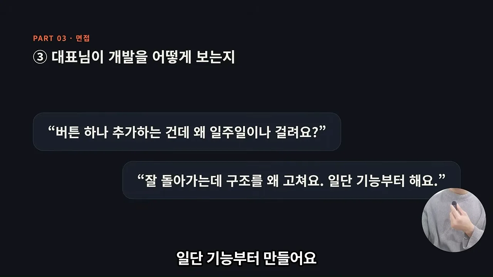
발표자는 이 부분을 "정말 중요하다"고 강조해요. 아래 슬라이드 왼쪽 카드는 요즘 보이는 시선이에요. AI(Artificial Intelligence)로 뚝딱 만들 수 있다며 개발자 역할을 작게 보는 경향인데, 발표자는 스레드에서 이런 말을 많이 봤다고 해요. 오른쪽 카드는 겉으로는 티가 안 나지만 꼭 해야 하는 일, 레거시 코드 리팩토링과 버전 업그레이드예요. 이런 대표 밑에서는 이 일들을 해야 한다고 말해도 납득시키기 어려워요.
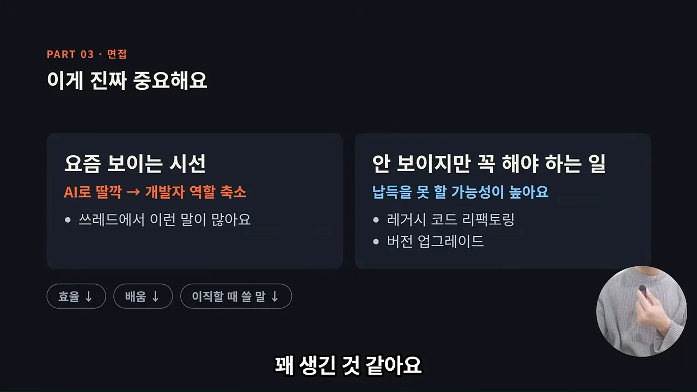
계약서에서 볼 네 가지
면접까지 잘 봤어도 마지막 관문이 남아요. 계약서예요. 여기부터는 법으로 정해진 영역이라, 걸리는 게 있으면 정말 신중히 고민해야 해요. 발표자는 아래 네 가지를 적어 뒀다가 합격 연락을 받는 날 하나씩 확인하라고 해요.
1. 근로계약서를 서면으로 주는가
근로계약서를 써서 주는 건 회사의 의무예요. 슬라이드 위 주황 꼬리표처럼 근로기준법 17조에 있어요. "일단 출근하고 계약서는 나중에 쓰자"는 회사라면, 나중에 월급 문제로 다툴 일이 생겼을 때 내 손에 남는 증거가 없어요.
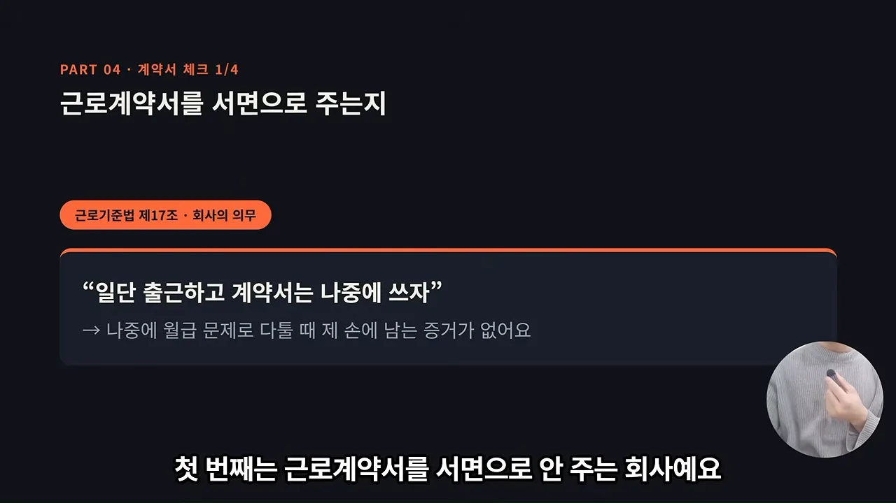
2. 위약금 조항이 있는가
아래 슬라이드의 두 문장, "1년 안에 나가면 300만 원 물어내야 한다", "교육 기간 월급을 돌려줘야 한다" 같은 조항이에요. 둘 다 '금지' 꼬리표가 붙어 있어요. 근로기준법 20조가 금지하는 위약 예정이에요.
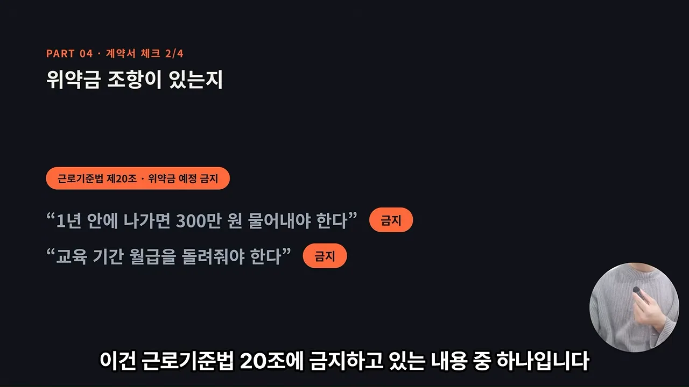
다만 발표자가 하나는 정확히 짚어요. 회사가 실제로 돈을 내고 외부 교육을 보내 준 경우는 달라요. 그 비용을 남은 기간만큼 나눠 돌려받기로 한 약정은 판례상 인정될 수 있어요. 그래서 아래 슬라이드 왼쪽 카드처럼 계약서에 교육비 반환 조항이 있으면 무슨 교육인지 적혀 있는지 보세요. 궁금하면 오른쪽 말풍선처럼 "혹시 입사하면 어떤 교육을 받게 되나요?" 정도로 가볍게 물으면 돼요. 어떤 교육인지 없이 '교육비'로만 뭉뚱그려 적혀 있다면 조심하는 게 좋아요.
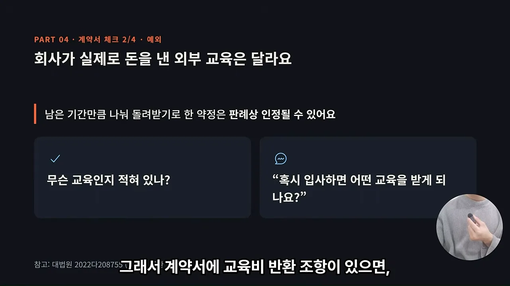
3. 수습 급여
수습 기간에 급여를 깎는 것 자체는 가능해요. 아래 슬라이드 위 주황 칸 세 개가 조건이에요. 1년 이상 계약일 때, 처음 3개월만, 최저임금의 90%까지예요. 2026년 최저임금이 월 2,156,880원이니 그 90%인 194만 원 정도가 바닥이에요. 수습이라도 이보다 적게 받으면 안 돼요.
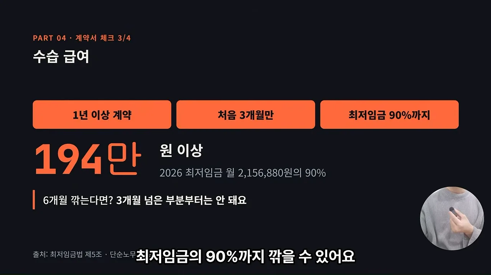
멘토링에서 정말 많이 들은 말도 있어요. 아래 슬라이드 위쪽 인용처럼 "교육이 1개월 있는데, 교육 기간엔 돈이 안 나온다"는 회사예요. 발표자는 이 말에 화가 많이 났다고 해요. 입사하고 회사가 시켜서 받는 교육은 근로시간이라 월급이 나와야 하고, 고용노동부 상담 답변도 그래요. 다만 입사 전에 교육을 받아 보고 채용할지 정하기로 미리 합의한 경우는 다르게 볼 수 있어요. 발표자는 멘티들에게 이런 회사는 가지 말라고 했대요.
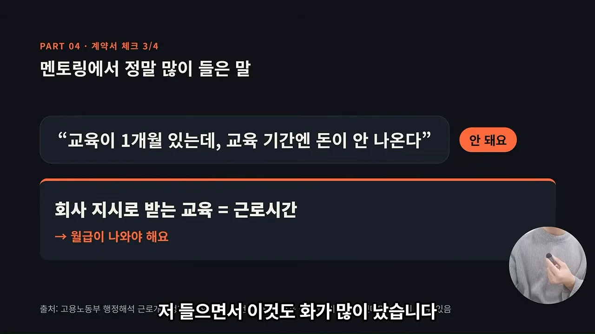
4. '연봉 얼마, 야근 포함'
기본급과 야근 수당이 하나로 뭉쳐 있는 계약이에요. 고용노동부가 포괄임금 오남용 방지 지침을 시행하고 있어서, 일한 시간보다 적게 주면 안 돼요. 아래 슬라이드의 빈칸 두 줄처럼 계약서에 기본급과 연장근로 수당이 따로 적혀 있는지 보세요.
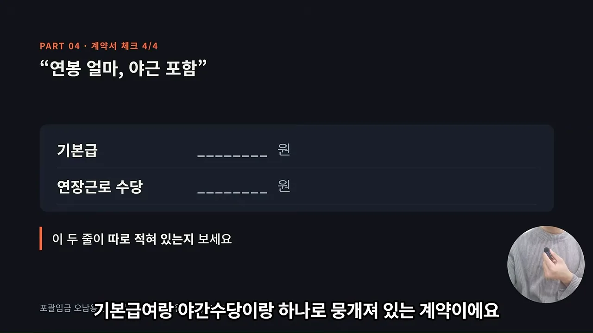
네 가지 한눈에, 그리고 어쩔 수 없을 때
아래 체크리스트 슬라이드가 네 가지를 한 줄씩 모았어요. 오른쪽 끝 회색 글씨가 각 항목의 근거예요. 서면 교부는 17조, 위약금은 20조, 수습은 최저임금법이에요.
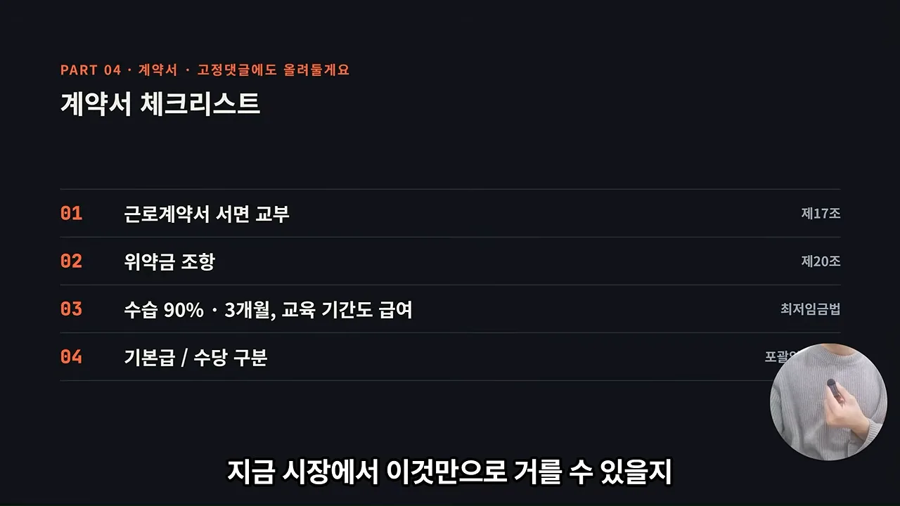
발표자도 솔직하게 덧붙여요. 지침이 있어도 지금 시장에서 이것만으로 회사를 다 거를 수 있을지는 의문이라고요. 권하지는 않지만 어쩔 수 없다면 들어가는 것도 방법이라고 봐요. 대신 아래 슬라이드의 두 카드처럼, 퇴근 후 공부는 못 하더라도 하는 업무를 하나하나 기록하고 이직 준비를 빡세게 해야 해요.
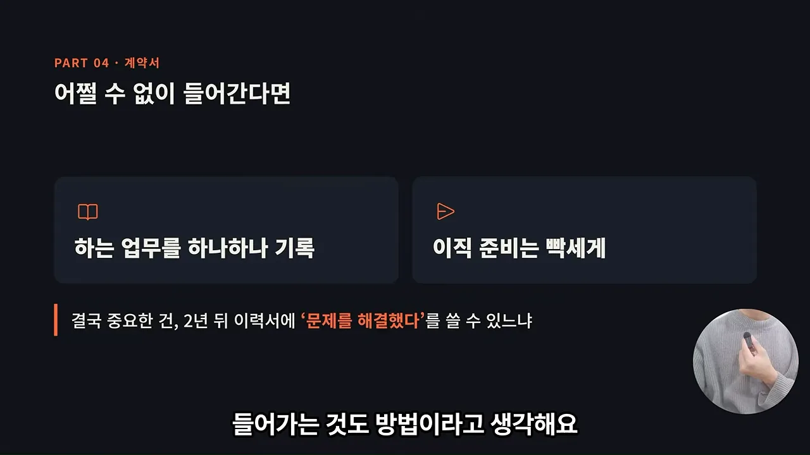
작은 회사도 괜찮아요, 대신 이것만은
여기까지 들으면 아래 슬라이드의 말풍선 같은 생각이 들 수 있어요. "아니, 서류도 겨우 붙는데 지금 회사를 고를 처지예요?" 발표자도 그랬고, 그 마음을 잘 안다고 해요. 그래서 실제로 취업이 되는 게 제일 중요하다고 생각하고, 작은 회사는 가지 말라는 말을 하지 않아요. 연봉이 좀 낮아도, 직원이 10명 이하여도 괜찮다고 해요.
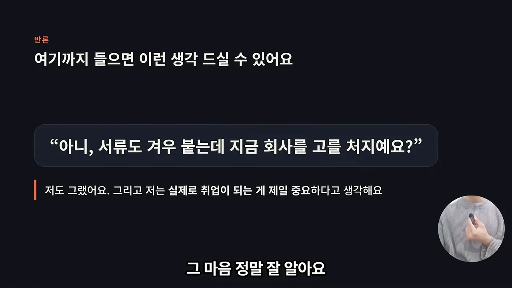
공고 분석에서도 그게 드러나요. 직원 수가 나온 공고 158개 중 68개, 43%가 30명 이하 회사였어요. 신입이 갈 수 있는 곳의 상당수가 작은 회사라는 뜻이에요.
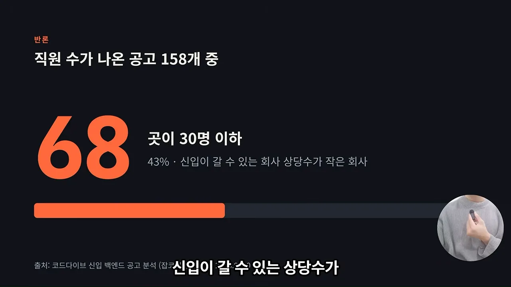
발표자가 피하라고 한 건 작은 회사가 아니에요. 아래 슬라이드의 경고 네 칸, 월급이 밀리는 회사, 경력을 속여서 보내는 회사, 가르쳐 줄 사람이 없는 회사, 법을 안 지키는 회사예요. 앞의 섹션들이 각각 이 네 칸을 거르는 방법이었어요.
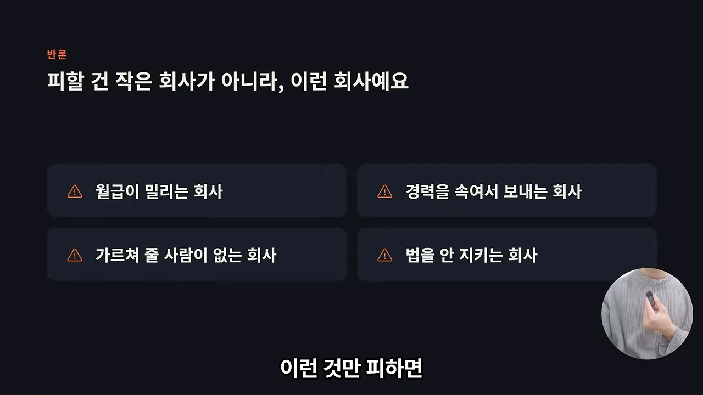
가도 되는 중소기업의 세 가지
반대로 가도 되는 중소기업은 세 가지로 봐요. 아래 슬라이드의 카드 세 장, 물어볼 선배(사수)가 있는지, 회사가 돈을 버는지, 내 할 일이 분명한지예요. 첫 카드만 주황색인 건 발표자가 이걸 가장 중요하게 보기 때문이에요. 본인도 사수 덕분에 정말 많이 배웠다고 해요. 그때 퇴근 후 기술 공부만 조금 더 했으면 훨씬 잘 성장했을 텐데, 다른 일을 많이 해서 아쉽다고 덧붙여요.
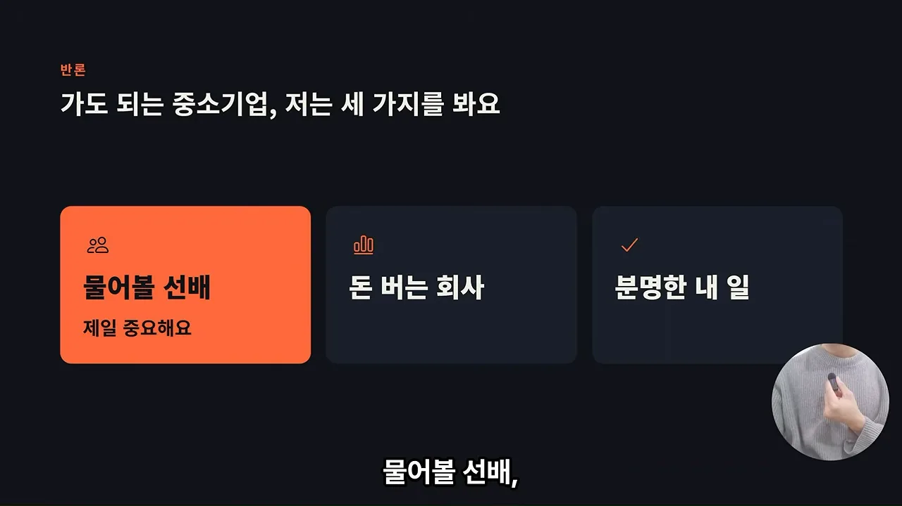
중소기업이라 챙길 수 있는 돈
중소기업이라서 받을 수 있는 혜택도 있어요. 아래 슬라이드의 90%가 중소기업 취업 청년 소득세 감면이에요. 만 34세 이하 청년이 중소기업에 취업하면 5년 동안 소득세를 90% 감면받고, 한도는 1년에 200만 원이에요. 아래 꼬리표처럼 2026년 12월 31일 취업분까지 적용되고, 입사한 다음 달 말일까지 회사에 신청서를 내면 돼요.
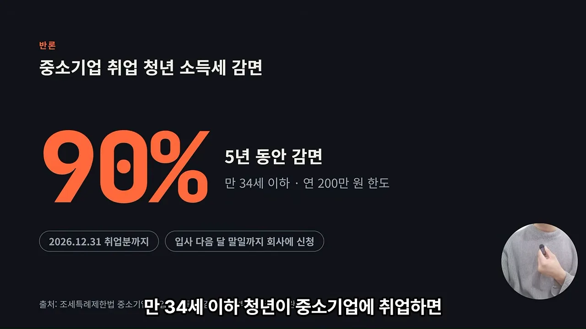
수도권이 아닌 중소기업이라면 지원금도 따로 있어요. 아래 슬라이드처럼 6개월 이상 다닌 청년에게 2년 동안 지역에 따라 480만~720만 원이 나와요. 슬라이드 제목은 청년일자리도약장려금(비수도권)이고, 꼬리표에 수도권 청년은 없다고 적혀 있어요.
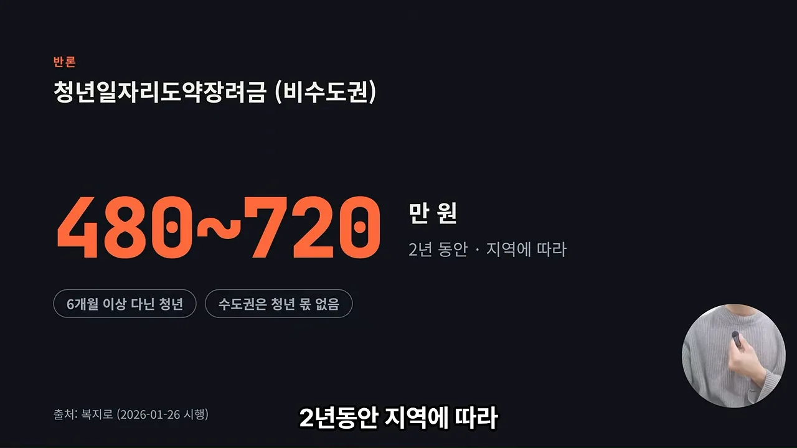
면접 끝에 물어볼 질문 네 가지
면접 끝에 "궁금한 거 있으세요?"라고 물으면 "없습니다"로 끝내지 말고 네 가지를 물어보라고 해요. 질문마다 무엇을 알아보려는 건지가 짝지어 있어요.
- "개발팀은 몇 명이고, 제 사수는 몇 년 차인가요?" — 물어볼 선배가 있는지 보는 질문이에요. 발표자가 멘토링에서 가장 많이 시킨 질문이에요.
- "입사하면 처음 3개월 동안 어디서 어떤 일을 하나요?" — 파견인지, 내 일이 분명한지 보는 질문이에요.
- "코드 리뷰랑 배포는 어떻게 하세요?" — 개발 문화가 있는지 보는 질문이에요. 꼭 이 문장이 아니어도, 개발 문화를 알 수 있는 질문이면 무엇이든 괜찮아요.
- "바쁜 시기에는 팀분들이 보통 몇 시쯤 퇴근하세요?" — 야근이 얼마나 되는지 돌려서 묻는 질문이에요. 수당은 계약서에서 확인하면 돼요.
아래 정리 슬라이드의 오른쪽 회색 글씨가 각 질문의 목적이에요. 물어볼 선배, 파견·내 일, 개발 문화, 그리고 마지막은 야근이에요.
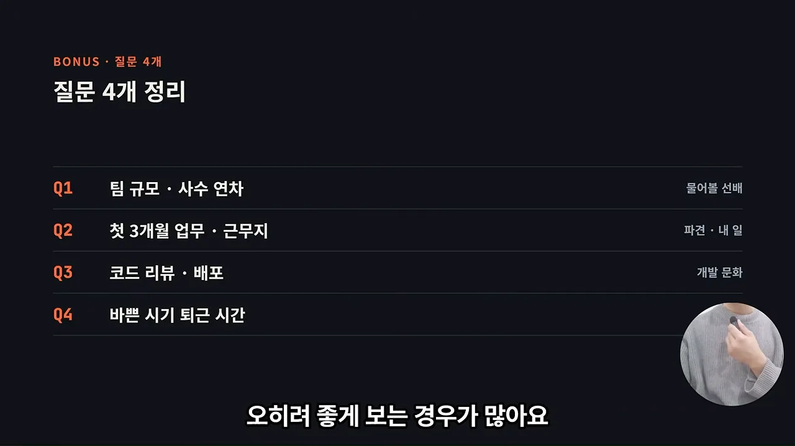
영상은 마지막으로 서류에서 떨어지고 있다면 그건 부족해서가 아니라고 말해요. 회사를 고르려면 먼저 여러 곳에서 연락이 와야 하고, 그 시작은 한눈에 잘 읽히고 내용이 있는 이력서라고 해요. 오늘 이야기는 그 이력서에 2년 뒤 쓸 내용을 만들어 줄 회사를 고르는 방법이었어요.